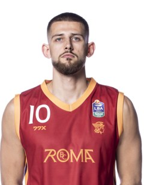
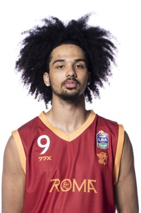
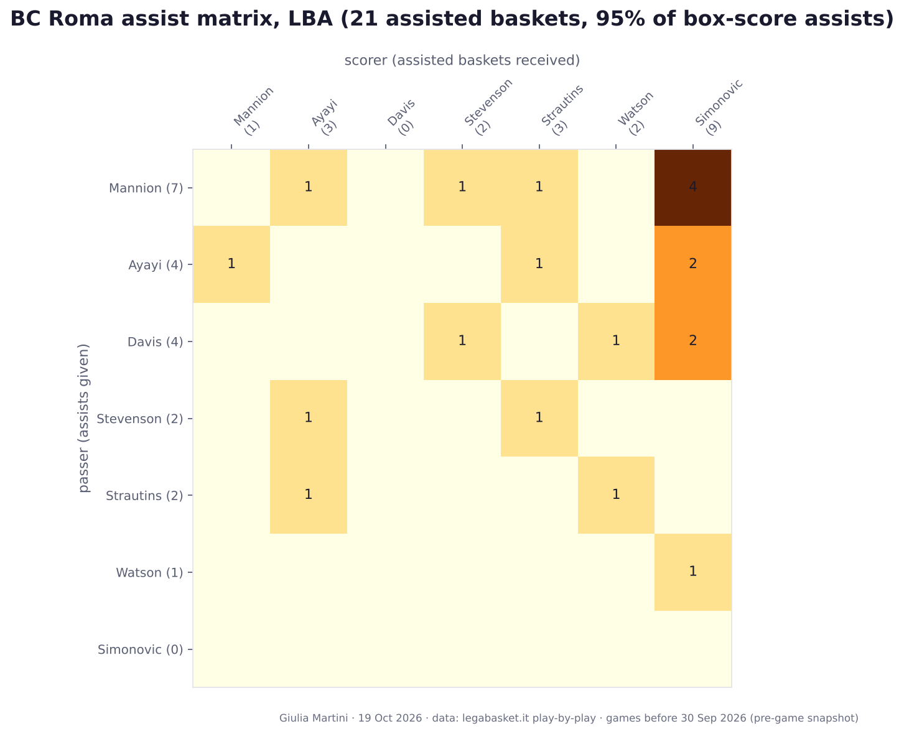
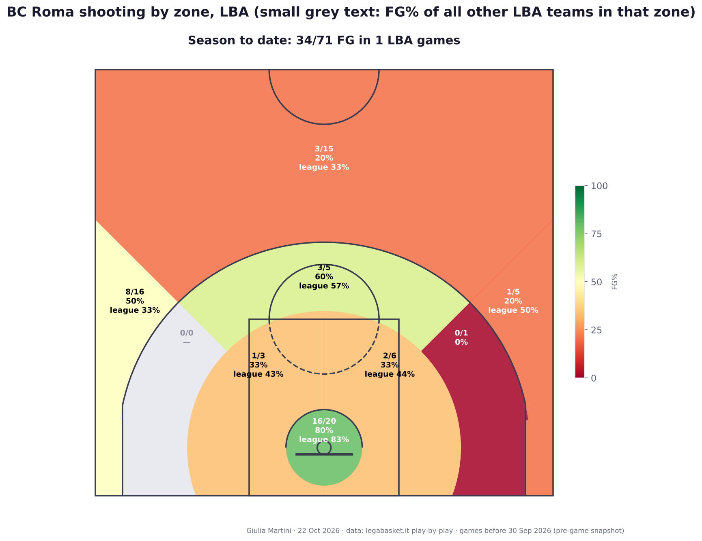
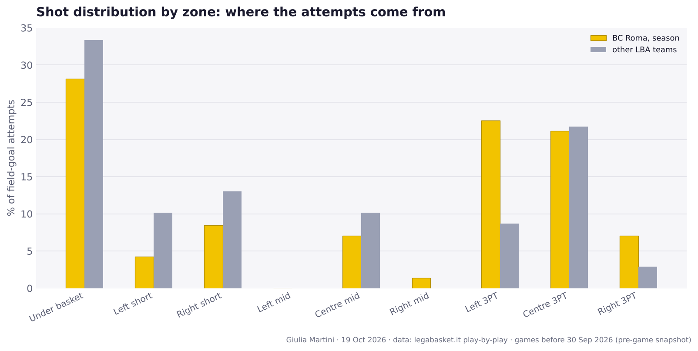
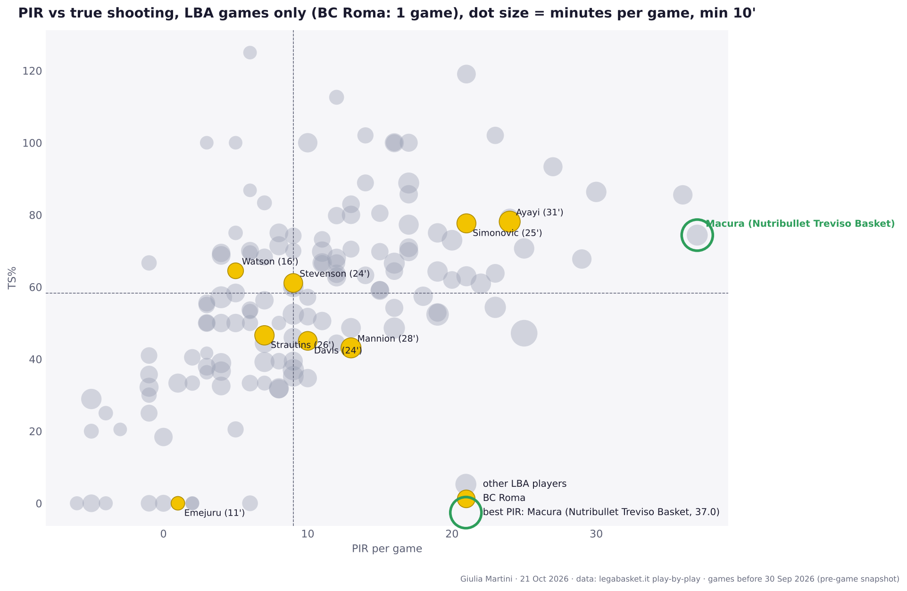
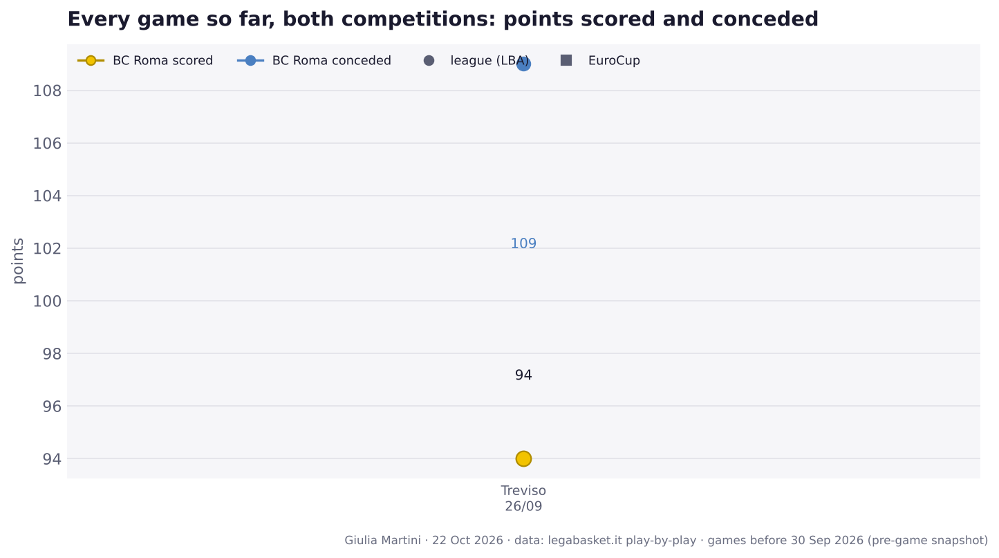

BC Roma before EuroCup: at Bahcesehir College Istanbul
EuroCup · Wednesday 30 September 2026
Pre-game snapshot: only data from games played before Wednesday 30 September 2026, in both competitions.
Author: Giulia Martini
Where BC Roma stands
EuroCup: 0-0 · LBA: 0-1 · 13th in the standings (0 points) · last five games (both competitions): L
- 09-26 · round 1: L 94-109 at Treviso
EuroCup standings are not available yet: they are computed from the EuroCup results (data/eurocup/results.csv), which the daily run fetches from the EuroLeague API.
Last game
LBA round 1, at Treviso (2026-09-26): loss 94-109.
No player had a significant increase in playing time in that game (flag: at least 8' played and either +7' or +30% versus the average in earlier games).
Team numbers to date
| LBA | EuroCup | |
|---|---|---|
| Games | 1 | – |
| Record | 0-1 | – |
| Points per game | 94.0 | – |
| Points allowed per game | 109.0 | – |
| Offensive rating | 123.3 | – |
| Defensive rating | 137.3 | – |
| Net rating | -14.0 | – |
| Pace (possessions per 40') | 77.8 | – |
| eFG% | 56.3 | – |
| TOV% (per 100 poss.) | 15.7 | – |
| OREB% | 43.2 | – |
| FT rate (FTA/FGA) | 29.6 | – |
| 3PA per game | 36.0 | – |
| 3P% | 33.3 | – |
| 2P% | 62.9 | – |
| FT% | 66.7 | – |
| Assists per game | 22.0 | – |
| Opp. eFG% | 60.9 | – |
| Opp. TOV% (forced) | 8.8 | – |
| DREB% | 65.7 | – |
Ratings are points per 100 possessions. eFG% = (2P + 1.5 × 3P) / FGA · TOV% = turnovers per 100 possessions · OREB% = share of available offensive rebounds · FT rate = free throw attempts per field goal attempt.
Roster
Per-game averages before this game, LBA + EuroCup. Shooting: percentage (attempts per game).
| Player | Pos | Ht | GP | MIN | PTS | REB | AST | PIR | FG% (FGA) | 3P% (3PA) | FT% (FTA) | PPG LBA | |
|---|---|---|---|---|---|---|---|---|---|---|---|---|---|
| Ayayi | – | – | 1 | 31.0 | 17.0 | 6.0 | 4.0 | 24.0 | 70 (10.0) | 50 (2.0) | 100 (2.0) | 17.0 | |
| Mannion | – | – | 1 | 28.0 | 11.0 | 3.0 | 7.0 | 13.0 | 27 (11.0) | 25 (8.0) | 75 (4.0) | 11.0 | |
| Strautins | – | – | 1 | 26.0 | 12.0 | 6.0 | 2.0 | 7.0 | 33 (12.0) | 33 (6.0) | 100 (2.0) | 12.0 | |
| Simonovic | – | – | 1 | 25.0 | 20.0 | 8.0 | 0.0 | 21.0 | 75 (12.0) | 50 (2.0) | 50 (2.0) | 20.0 | |
| Davis | – | – | 1 | 24.0 | 8.0 | 2.0 | 4.0 | 10.0 | 38 (8.0) | 0 (4.0) | 100 (2.0) | 8.0 | |
 |
Stevenson | – | – | 1 | 24.0 | 11.0 | 2.0 | 3.0 | 9.0 | 44 (9.0) | 43 (7.0) | – (0.0) | 11.0 |
| Watson | – | – | 1 | 16.0 | 13.0 | 1.0 | 1.0 | 5.0 | 57 (7.0) | 50 (6.0) | 29 (7.0) | 13.0 | |
| Emejuru | – | – | 1 | 11.0 | 0.0 | 3.0 | 0.0 | 1.0 | 0 (1.0) | – (0.0) | – (0.0) | 0.0 | |
| Mezzanotte | – | – | 1 | 9.0 | 0.0 | 1.0 | 0.0 | 0.0 | – (0.0) | – (0.0) | – (0.0) | 0.0 | |
 |
Flowers | – | – | 1 | 5.0 | 2.0 | 1.0 | 1.0 | 3.0 | 0 (1.0) | 0 (1.0) | 100 (2.0) | 2.0 |
| Iuzzolino | – | – | 1 | 1.0 | 0.0 | 0.0 | 0.0 | 0.0 | – (0.0) | – (0.0) | – (0.0) | 0.0 |
Assists

Passer (rows) to scorer (columns), assisted baskets linked in the LBA play-by-play, games before this one. Most frequent pairs: Mannion → Simonovic (4), Ayayi → Simonovic (2), Davis → Simonovic (2), Ayayi → Mannion (1), Davis → Stevenson (1).
Shot zones


Efficiency: true shooting vs PIR
LBA games only

Every game so far

Comments
Anyone with a GitHub account can comment here; the comments are kept as a GitHub issue of the repository, one per page.